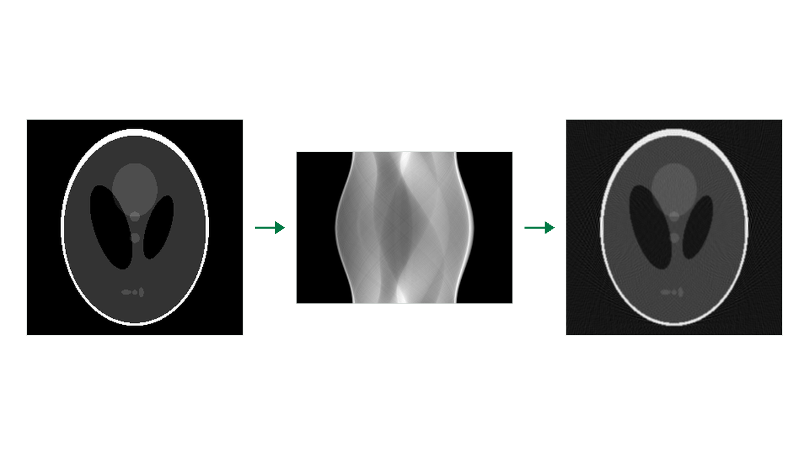
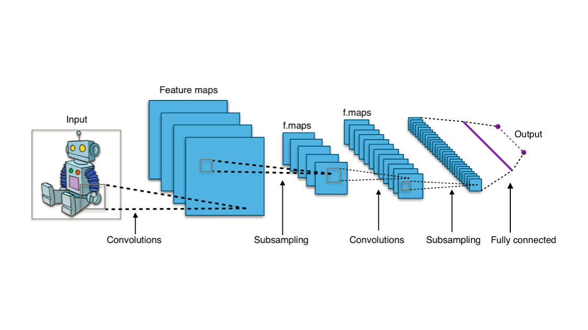
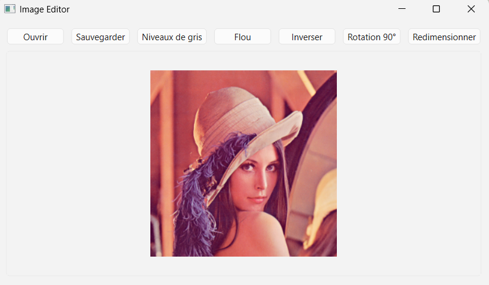
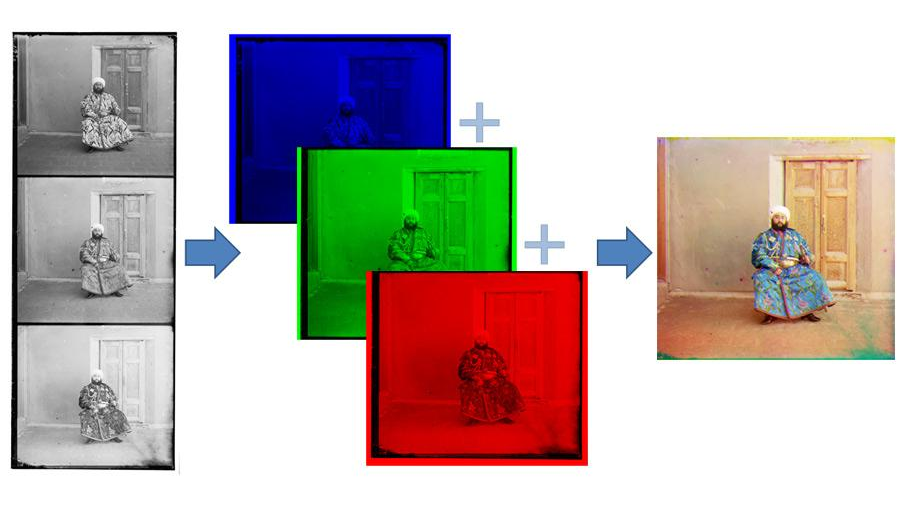
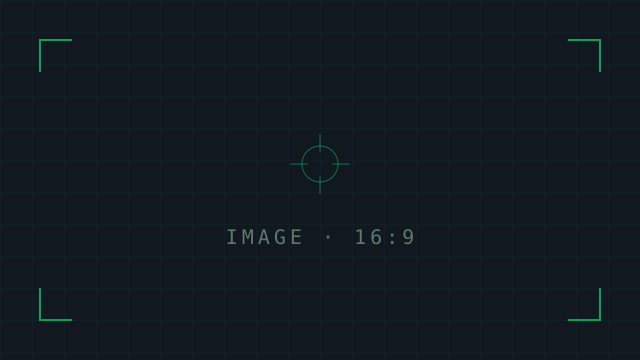
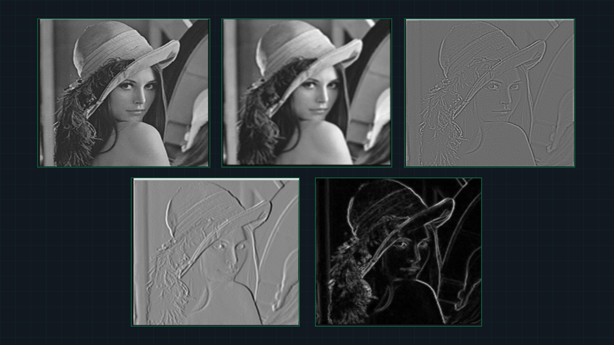
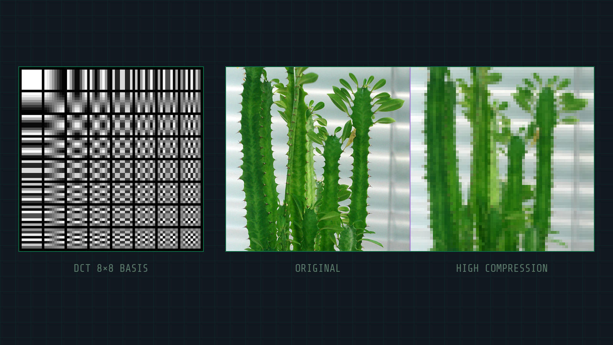
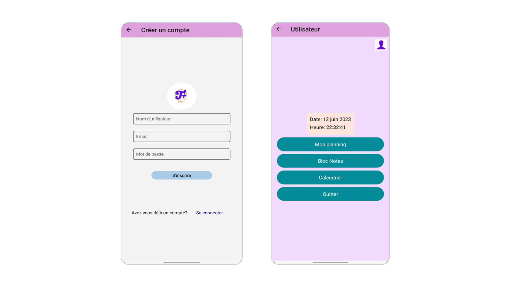

Projects

Tomographic Reconstruction — Filtered Back-Projection
From-scratch C++ implementation of the CT reconstruction pipeline: Shepp-Logan phantom generation, forward projection via Radon transform, and filtered back-projection using the Ram-Lak ramp filter — no external dependencies.
From-scratch C++ implementation of the full CT (computed tomography) reconstruction pipeline. The project includes: generation of a Shepp-Logan phantom as a synthetic test image, forward projection via the Radon transform to simulate sinogram acquisition, and reconstruction using filtered back-projection with the Ram-Lak ramp filter. Built entirely without external image processing libraries, relying only on standard C++ and CMake.

Computer Vision & Classification
Image classification using VGG-16 with transfer learning on Kaggle. Training a CNN from scratch, visualizing feature maps, data augmentation, and 1D convolutions on time series.
Image classification project using VGG-16 with transfer learning on Kaggle. The project covers: fine-tuning a pre-trained VGG-16 model on a custom dataset, training a CNN from scratch and optimizing its performance, extracting and visualizing feature maps from convolutional layers, applying data augmentation techniques (rotation, zoom, flip) to improve model robustness, and experimenting with 1D convolutions applied to time series data.

Image editor
Graphical user interface built with Qt and C++. Implementation of functions for loading, displaying and saving images. Development of image processing filters.
Desktop image editor developed in C++ using the Qt framework and OpenCV. Features include: a clean graphical user interface with file browser and image preview, functions to load, display and save images in various formats, a set of image processing filters (blur, sharpening, edge detection, grayscale conversion, brightness/contrast adjustment), and real-time preview of filter effects before applying them.

Image reconstruction from multiple aligned channels
Recovery of the various channels. Alignment and merging of these various channels.
Academic project focused on multi-channel image reconstruction for medical imaging purposes. The pipeline involves: extracting and recovering individual color/spectral channels from a raw acquisition, aligning the channels using image registration techniques to correct misalignments caused by acquisition conditions, and merging the aligned channels into a single reconstructed image. The project was implemented in Python using OpenCV and NumPy.

Development of a car racing game using Unity
Development of the user interface in Unity. Implementation of features in C#. Another feature is the ability to control the vehicle's movements by hand.
Academic game development project built with Unity and C#. The project includes: design and implementation of the full game UI (menus, HUD, score display), vehicle physics and movement mechanics implemented in C#, hand gesture-based control of the vehicle using a webcam input, track design and environment setup in the Unity editor, and integration of game events and collision detection logic.

Binary Image Processing
C++ implementations, covering binary image processing, morphological operations, segmentation and object detection.
Series of C++ implementations: image I/O and display, visual perception limits, color perception, binary image operators, morphological operations (erosion, dilation, opening, closing), connected component labeling, image segmentation, and object detection.

Implementation of a lossy compression pipeline inspired by JPEG
DCT analysis, quantization, entropy calculation, and fixed-length coding (FLC). Objective distortion metrics (PSNR, error maps).
Academic project implementing a lossy image compression pipeline inspired by the JPEG standard. The pipeline includes: block-based Discrete Cosine Transform (DCT) analysis to transform spatial data into frequency components, quantization of DCT coefficients to reduce data size, entropy calculation to measure information content, fixed-length coding (FLC) for bitstream encoding, and evaluation using objective distortion metrics such as PSNR and error maps to assess reconstruction quality.
Classification Algorithms
Implementation and comparison of ML algorithms: Logistic regression, SVM, Random Forests, Boosting. Automatic classification of items into specific categories.
Academic machine learning project focused on implementing and comparing classification algorithms from scratch and using Scikit-learn. Algorithms covered: Logistic Regression, Support Vector Machines (SVM), Random Forests, and Boosting (AdaBoost/Gradient Boosting). Each algorithm was evaluated on accuracy, precision, recall and F1-score, and the results were compared to determine the best-performing model for the given classification task.
Qt GUI — 2D graphics engine
Development of a human-machine interface using Qt in C++. Signal/slot architecture, Model/View pattern, 2D GraphicsView engine, and advanced event handling.
Academic project developing a complete graphical user interface in C++ using the Qt framework. The project implements: the signal/slot mechanism for event-driven communication between UI components, the Model/View pattern to separate data logic from presentation, a 2D scene built with Qt's GraphicsView framework allowing interactive rendering and manipulation of graphical elements, and advanced event handling for mouse, keyboard and custom user interactions.

Implementation of a daily scheduling app
Help students better plan their days. Design. Development of the mobile app. Integration with a Firebase database.
Personal mobile application designed to help students organize and better plan their daily schedules. The project covers the full development cycle: UI/UX design of the app screens and user flow, mobile development using React Native for cross-platform compatibility (iOS & Android), integration with a Firebase Realtime Database for storing and syncing user schedules, user authentication, and real-time updates of tasks and events.
Certificate of Excellence awarded for outstanding performance in deep learning with PyTorch — covering CNNs, transfer learning, model training and optimization.
Certificate of Excellence awarded for outstanding performance in the OpenCV Bootcamp — covering image processing, computer vision techniques and real-world applications.
Certificate of Excellence for outstanding performance in the VLM Bootcamp — covering multimodal AI, vision-language architectures and real-world applications.